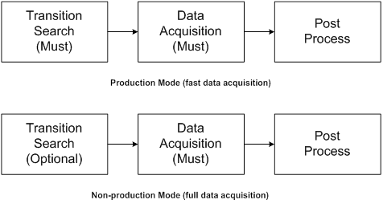
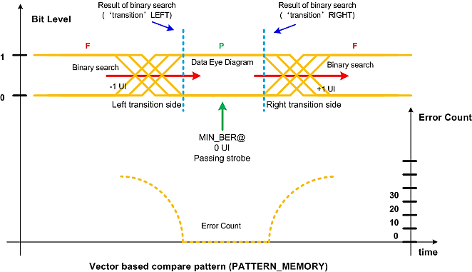
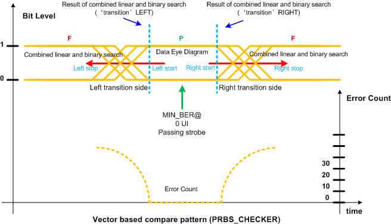
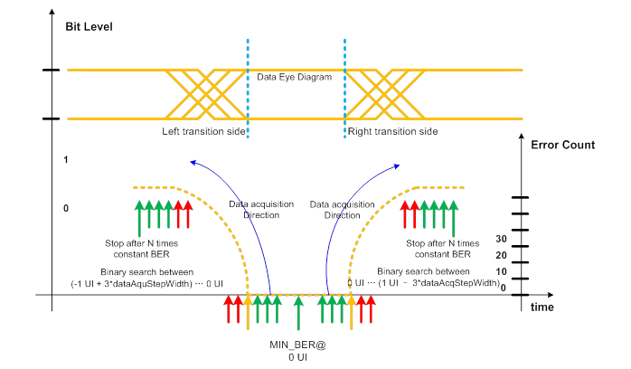

JitterSeparationHS
This test method calculates the jitter on the device output and separates the random jitter and deterministic jitter. As a result, the random jitter, deterministic jitter and total jitter will be reported or logged.
This test method supports multisite measurements and multiport measurements.
Generally, this test method performs jitter test via shifting the value of a spec variable. When the spec value is shifted, a functional test will be executed and the error count data is retrieved. Jitter histogram is calculated through analyzing the error count data.
Three major steps are involved in this JitterSeparationHS test method:

Transition search finds the bit transition position (the pass-to-fail or fail-to-pass position) needed in data acquisition. Data acquisition captures the error count data in the bit transition area. Post process calculates the random jitter, deterministic jitter and total jitter according to the input of error count and outputs the result.
The first step is optional and can be skipped by setting the corresponding parameters. The last two steps are mandatory for the jitter separation measurement.
Transition search
For accurate jitter measurements, the data acquisition should use a fine resolution which might lead to longer test time. The trade-off between accuracy and test time raises the need for an optimization of the exact acquisition area. Areas with a stable error count (for example, the eye opening) does not contribute to the measurement accuracy and should be avoided.
Therefore the first data acquisition should start at the first position where the error count starts to increase/decrease.
Transition search can be enabled by setting the parameter OperationMode.transitionSearch to ON. The transition search uses an error count number as pass/fail judgment that is calculated as (bitNumbers*fittingRangeMin).
The transition search is performed differently depending on the used source for pattern comparison:
- When the vector based compare pattern (PATTERN_MEMORY) is used for
pattern comparison, then from the start point defined by
DataAcquisition.leftTransition.start and
DataAcquisition.rightTransition.start, a binary search
with the range defined by DataAcquisition.UI_width and
the resolution defined by
DataAcquisition.dataAcquStepWidth on both left side and
right side will be performed:

- When the vector based hardware PRBS checker (PRBS_CHECKER) is used
for pattern comparison, then from the start point defined by
DataAcquisition.leftTransition.start and
DataAcquisition.rightTransition.start to the stop point
defined by DataAcquisition.leftTransition.stop and
DataAcquisition.rightTransition.stop, a combined linear
and binary search from the start to the stop value with the resolution defined by
DataAcquisition.dataAcquStepWidth and step width defined
by 0.05UI on both left side and right side will be performed:

Data acquisition
During data acquisition, the compare strobe will
linearly be moved through a defined area of the data eye and the error count will be captured on
all measurement pins in parallel. The step size is defined by the parameter
DataAcquisition.dataAcquStepWidth. This
parameter determines the accuracy of the measurement and hence the execution time.
The data acquisition is always from the bottom of lowest error count area to left side or to right side:

The test method checks for a steady error count as stop criteria (optimized data acquisition stop).
There are three cases for the range of data acquisition. The table below shows the details:
Case No. |
Transition Search |
Data Acquisition |
||
|---|---|---|---|---|
Mode |
Result |
start time |
stop time |
|
1 |
ON |
Pass |
pass/fail transition of Transition Search |
Optimized data acquisition stop |
2 |
ON |
Fail |
Measurement stops |
|
3 |
OFF |
|
Measurement stops |
|
Post process
The jitter separation is done via the Q-factor method. The starting point for the jitter separation with the Q-factor is the bathtub curve of the error count data. After the data is captured, the Bit Error Rate (BER) of each sampling point will be calculated by dividing the recorded error count by the total number of bit in the vector stream.
Then the bathtub curve is transferred to the Q-space for the selected BER range
(fittingRangeMax, fittingRangeMin) as in the figure
below. The appropriate selection of the fitting range is crucial for meaningful jitter
separation results. Make sure that at least two sample points exist in the selected fitting
range. The quality of the fitting can be reflected by the r2 factor that will
be reported in the report window. A perfect fitting is achieved with r2 = 1.

A fitting on the two slopes of the Q-space curve will be done. The fitting on the selected range of the Q-space curve will give two straight lines with a certain slope and a certain distance point. The respective slope is determined by the Random Jitter, while the distance of the two slopes is determined by the Deterministic Jitter. Therefore, the random Jitter can be calculated for each side of the data eye. In theory they should be the same for both transition, but in practice this is not always the case. The total random jitter is the average of the left side and the right side. The deterministic jitter gets calculated by the distance of the means of the two slopes. the Total jitter consists of deterministic jitter and random jitter. The absolute random jitter (peak-peak) depends on the target BER number. So the total jitter is also related to the target BER number.
In the report window the deterministic jitter, random jitter and total jitter will be printed. Additionally, the mean values and the r2 fitting factors will be reported.
This test method supports test table. But you need to enter the test names manually in the parameter. You can use both test table and testflow limits in a testflow. The test table has higher priority than testflow limits. If a test name used in the test flow is defined in both test table and testflow limits, the value defined in the test table will be used.
Group |
Parameter |
Type |
Description |
|---|---|---|---|
OperationMode |
OperationMode.productionMode |
string |
Selects the operation mode.The optional values are ON (fast data acquisition) and OFF (full data acquisition). |
OperationMode.transitionSearch |
string |
Enables or disables the transition search. The optional values are ON and OFF. |
|
PinInformation |
PinInformation.pinList |
String |
The list of the pin or pin groups that the spec is shifted for. The member of pin list needs to be O or IO digital pins or pin groups, which are delimited by commas. For differential pins, you only need to input the positive pins. |
PinInformation.portName |
string |
Optional. The port name to which the pinList belongs to. Default value is @. Only pins belonging to one port can be measured together. |
|
PinInformation.specName_postfix |
string |
The postfix is used to define the spec variables. A spec variable corresponding to each tested pin must be defined to be used for jitter measurement. For example, if "Tx0" is the pin to be measured, and the spec variable to use is "Tx0_offset". Then this parameter needs to be set as "offset". |
|
DataAcquisition |
DataAcquisition.UI_width |
double |
The time interval of a bit in the test pattern. It is in the format of value[unit] and the default value is 0[ns]. |
DataAcquisition.leftTransition.start |
double |
It is in the format value[unit] and the default value is 0[ns]. |
|
DataAcquisition.leftTransition.stop |
double |
It is in the format value[unit] and the default value is 0[ns]. |
|
DataAcquisition.rightTransition.start |
double |
It is in the format value[unit] and the default value is 0[ns]. |
|
DataAcquisition.rightTransition.stop |
double |
It is in the format value[unit] and the default value is 0[ns]. |
|
DataAcquisition.dataAcquStepWidth |
double |
Step width of data acquisition. it is in the format of value[unit] and the default value is 0[ns]. |
|
Pattern |
Pattern.comparePatternSource |
string |
Specifies whether vector based compare pattern or the hardware PRBS checker is used for pattern comparison:
|
Pattern.bitNumbers |
long |
The total bit numbers of the pattern. You must specify the correct total bit numbers of the pattern. Note bitNumbers is mandatory for production mode (fast data
acquisition).
|
|
Pattern.patternType |
string |
Selects whether data (DATA) or clock (CLK) pattern is compared. Where:
Note The default value is DATA. Notice that, the parameter patternType will be disabled when Pattern.bitNumbers is greater than 0 for PATTERN_MEMORY. Also, if PRBS_CHECKER is selected, then patternType will be set to DATA and disabled. |
|
Result |
Result.fittingRangeMax |
double |
The maximum BER number for fitting. |
Result.fittingRangeMin |
double |
The minimum BER number for fitting. |
|
Result.BERFactor |
int |
The target BER for total jitter calculation. |
|
|
output.mode |
string |
This parameter is in effect only if output is set to ReportUI. There are three options:
Note The default value is SUMMARY.
|
|
output |
string |
Selects to wether print a message in the ReportUI window or not:
Note The default is ReportUI.
|
|
testName |
string |
The test names to be used as limits. The default test name is (random_jitter_ps,deterministic_jitter_ps,total_jitter_ps). If you want to use the test names defined in the test table or testflow limits, type in the test names manually. Make sure the test names are in the Test name column of the test table (Refer to Structure of a TMLimits CSV file) or in the Test Name column of Tests page of Flow Data Editor. |
random_jitter_ps |
The pass range of the random jitter. |
deterministic_jitter_ps |
The pass range of the deterministic jitter. |
total_jitter_ps |
The pass range of the total jitter. |
correlation_coefficient |
The pass range of the correlation coefficient. Note If no limit is specified for the correlation
coefficient, then 0.95 will be used as the lower limit and 1 as the upper
limit.
|
Implemenatation pseudo code
IF not already connected THEN connect DUT ENDIF clear sequencer status IF transition search on THEN find fine transition position on left side find fine transition position on right side ENDIF IF transition area already found THEN capture error count data in transition area ELSE capture error count data in specified area ENDIF calculate jitter separation from error count data IF synchronization on keep value THEN apply spec value of synchronization position for next test suite ENDIF datalog test results
For further reading: "An Engineer's Guide to Automated Testing of High-Speed Interfaces" by Jose Moreira and Hubert Werkmann, Artech House 2010, ISBN 978-1-60783-983-5.
Functional changes
- Introduced in SmarTest 7.3.2
- SmarTest 7.3.2: Supports PinSclae SL card
- SmarTest 7.3.2: New parametrs:Production mode flag, pattern type (CLK,DATA), compare pattern source (PATTERN_MEMORY, PRBS_CHECKER).
- SmarTest 7.3.2: New limits: Correlation coefficient as limit.
- SmarTest 7.3.2: Removed: Autosync, and passOnMaxErrorCount.
- SmarTest 7.3.2: Data type of bitNumbers has to be long long.